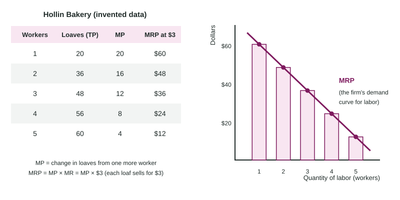

Introduction to Factor Markets
Firms buy labor, land and capital in factor markets, and their demand for these inputs is derived from the demand for the products the inputs make.
Part 1 · Hook
Why this matters
Part 2 · Before you start
What this builds on
Part 3 · Prerequisite check
Quick check before you start
1. A bakery's second baker raises output from 40 to 70 loaves. Her marginal product is
- 30 loaves
- 70 loaves
- 35 loaves
- 110 loaves
Show the answer
Marginal product is the change in output: 70 - 40 = 30.
- Correct: 30 loaves:
- 70 loaves:
- 35 loaves:
- 110 loaves:
2. For a firm in perfect competition, the marginal revenue from one more unit equals
- the market price
- zero
- its average total cost
- its total revenue
Show the answer
A price taker sells every unit at the market price, so MR = P.
- Correct: the market price:
- zero:
- its average total cost:
- its total revenue:
3. A monopolist that wants to sell one more unit must
- lower its price, so MR is below the price
- raise its price
- keep its price, so MR equals the price
- stop producing
Show the answer
The single seller faces the downward-sloping market demand, so MR lies below demand.
- Correct: lower its price, so MR is below the price:
- raise its price:
- keep its price, so MR equals the price:
- stop producing:
Part 4 · See it
See it first

Part 5 · Step by step
How it works, step by step
Part 6 · Key ideas
Key ideas
- In factor markets firms buy labor, land and capital; households sell them and earn wages, rent and interest.
- The demand for a factor is derived demand: it comes from the demand for the product the factor helps make.
- Marginal revenue product is the extra revenue from one more worker: MRP = MP × MR. For a price taker, MR = P, so MRP = MP × P.
- MRP falls as workers are added, because of diminishing marginal returns (and, for a seller that must cut its price, falling MR). The MRP curve is the firm's demand curve for labor.
Part 7 · Misconception
A common mistake
The wrong idea: A worker's MRP is found by multiplying marginal revenue by the price of the product.
What actually happens: MRP multiplies the worker's extra output by the extra revenue per unit: MRP = MP × MR. Only for a price taker does MR equal P, which makes it MP × P.
Part 8 · Check yourself
Check yourself
Exam-style questions. Anything you miss goes into your review queue.
1. What is a factor market?
- A market where households buy finished goods from firms
- A market where a government sets the price of each input
- A market where firms sell goods to other countries
- A market where firms buy labor, land and capital from their owners
Show the answer
In a factor market, households (and other owners of resources) sell labor, land and capital, and firms buy them. Payments are wages, rent and interest.
- A market where households buy finished goods from firms: That is a product market.
- A market where a government sets the price of each input: Prices in factor markets are usually set by buyers and sellers; who sets them is not what defines the market.
- A market where firms sell goods to other countries: Selling abroad is trade in goods, which happens in product markets.
- Correct: A market where firms buy labor, land and capital from their owners: Right: factor markets trade the inputs used to make goods and services.
2. Why is the demand for a factor of production called a derived demand?
- Buyers want the product that the factor helps make
- The factor's price is figured out by a formula set by the firm
- Workers derive satisfaction from the goods they make
- The factor's demand curve is drawn from the firm's total cost
Show the answer
A bakery does not want bakers for their own sake; it wants them because people buy bread. If bread demand falls, the bakery wants fewer bakers.
- Correct: Buyers want the product that the factor helps make: Right: the factor's value to the firm comes from the product's value to buyers.
- The factor's price is figured out by a formula set by the firm: Derived refers to where the demand comes from, not to how a price is calculated.
- Workers derive satisfaction from the goods they make: Workers' satisfaction is about the sellers of labor; derived demand is about the buyers.
- The factor's demand curve is drawn from the firm's total cost: It comes from the revenue the factor brings in (its MRP), which depends on the product's demand.
Data
Tallow Candle Works: workers and output
| Workers | Total product (candles per day) |
|---|---|
| 0 | 0 |
| 1 | 30 |
| 2 | 55 |
| 3 | 75 |
| 4 | 90 |
| 5 | 100 |
3. Use the table. What is the marginal product of the third worker, in candles per day?
Type a number. A four-function calculator is allowed, as on the exam.
Show the answer
Marginal product is the change in total product from one more worker: 75 - 55 = 20 candles.
- Answer: 20
4. Use the table. What is the marginal revenue product of the fourth worker, in dollars per day?
Type a number. A four-function calculator is allowed, as on the exam.
Show the answer
The fourth worker adds 90 - 75 = 15 candles, and for a competitive seller each candle adds the price, $2, to revenue. MRP = MP × MR = 15 × $2 = $30.
- Answer: 30
5. Use the table. The market price of candles rises from $2 to $3. What is the new marginal revenue product of the second worker, in dollars per day?
Type a number. A four-function calculator is allowed, as on the exam.
Show the answer
The second worker still adds 55 - 30 = 25 candles. At $3 each, MRP = 25 × $3 = $75, up from $50.
- Answer: 75
6. A firm sells its output in a perfectly competitive market. Which expression gives the marginal revenue product of a worker?
- Marginal revenue × price
- Total product × price
- Marginal product × price
- Marginal product ÷ price
Show the answer
MRP is the extra revenue from one more worker: the extra output (MP) times the extra revenue per unit (MR). In perfect competition MR = P.
- Marginal revenue × price: This multiplies two dollar amounts per unit and leaves out the worker's output. MRP = MP × MR.
- Total product × price: That is the revenue from all the workers' output, not from one more worker.
- Correct: Marginal product × price: Right: for a price taker, marginal revenue equals price, so MRP = MP × MR = MP × P.
- Marginal product ÷ price: Dividing gives units of output per dollar, a different measure. MRP multiplies MP by the revenue each unit adds.
7. Put the links in order: buyers start wanting more bicycles, and a bike maker hires more assemblers.
- Demand for bicycles increases
- The price of bicycles rises
- Each assembler's MRP rises (MP × the higher price)
- The bike maker wants to hire more assemblers at each wage
Show the answer
Derived demand runs from the product to the factor: more demand for the product, a higher product price, a higher MRP for each worker, and so more workers wanted at each wage.
- Correct order: 1. Demand for bicycles increases 2. The price of bicycles rises 3. Each assembler's MRP rises (MP × the higher price) 4. The bike maker wants to hire more assemblers at each wage
Part 9 · Summary
Summary
Part 10 · Up next
What comes next
Part 11 · Connections